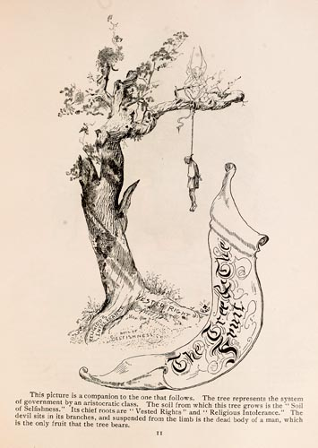

|  |
This picture is a companion to the one that follows. The tree represents the system of government by an aristocratic class. The soil from which this tree grows is the "Soil of Selfishness." Its chief roots are "Vested Rights" and "Religious Intolerance." The devil sits in its branches, and suspended from the limb is the dead body of a man, which is the only fruit that the tree bears. |